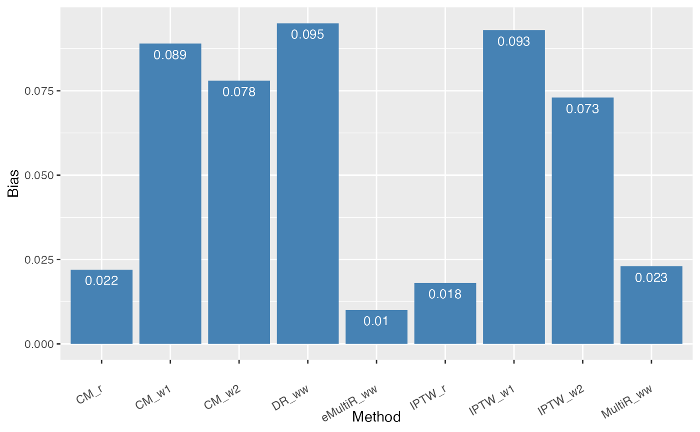

NAME-OF-VIGNETTE.RmdeMultiR is a multiply robust framework for estimation of causal effect under the setting with a binary outcome, where multiple propensity score models and conditional mean imputation models are used to ensure estimation robustness. Moreover, eMultiR reduces estimation variability by incorporating secondary outcomes that are highly correlated with the primary binary outcome. The resulting estimates are less sensitive to model mis-specification compared to that based on the existing state-of-the-art methods (e.g., doubly robust estimators).
To begin with, the user need to install our packages
if (!require("devtools")) {
install.packages("devtools")
}
devtools::install_github("chencxxy28/eMultiR")load necessary packages for this tutorial
The basic setups
n=10000 # sample size; change to a smaller value
proportion<-1 # proportion of having secondary outcomes
correlation<-0.4 #correlation among secondary outcomes
variance<-1 #residual variance
time<-4 #time point
id<-rep(1:n,each=time) #subject id
etaT_1<-c(2,1,-1) #coefficients in the conditional mean model for treatment group
etaT_2<-c(1,0,-2) #coefficients in the conditional mean model for the control group
gammaT<-c(0.6,-1,-1,1) #coefficients for the treatment assignment model
betaT<-c(-1,1,2,1,1,1) #coefficients for the secondary outcomes
R_var<-ar1_cor(time,correlation) #construct the ar1 correlation structure for secondary outcomes
R_var_x<-ar1_cor(time,0.4) #construct the ar1 correlation structure for longitudinal covariates
casual_effect<-1.885925 #true casual odds ratio based on simulationThe following code is to simulate one main and secondary data
set.seed(1234567)
#generate data
y<-rep()
yy_1<-rep()
yy_2<-rep()
x<-rep()
x_reg<-rep()
prob<-rep()
trt_a<-rep()
for(i in 1:n)
{
#generate observed and counterfactual outcomes
x3_i<-rep(runif(1),time=time)
x2_i<-rep(rbinom(1,1,0.5),time=time)
x_i<- cbind(1, x2_i, x3_i)
x_reg_1_i<-x_reg_2_i<-cbind(1,x2_i[1],x3_i[1])
allresidual1<-rmvnorm(1,mean=rep(0,time),sigma=R_var)
allresidual2<-rmvnorm(1,mean=rep(0,time),sigma=R_var)
residual_1_i<-allresidual1[time]
residual_2_i<-allresidual2[time]
prob_x_10<-(1+(exp(-x_reg_1_i%*%etaT_1)))^(-1)
prob_x_20<-(1+(exp(-x_reg_2_i%*%etaT_2)))^(-1)
x_10<-qnorm(1-prob_x_10)
x_20<-qnorm(1-prob_x_20)
yy_1_i<-ifelse(residual_1_i>=x_10,1,0)
yy_2_i<-ifelse(residual_2_i>=x_20,1,0)
#generate treatment assignment
u_var<-x2_i[1]+sin(x3_i[1])+0.5*rnorm(1)
x_reg_trt_i<-c(x_reg_1_i,u_var)
prob_i<-(1+exp(-x_reg_trt_i%*%gammaT))^(-1)
trt_a_i<-rbinom(1,1,prob = prob_i)
#generate a longitudinal secondary outcomes
x_i<-cbind(x_i,trt_a_i*x_i)
residual_updated_i<-as.vector(allresidual1*trt_a_i+allresidual2*(1-trt_a_i))
y_i<-(x_i%*%betaT)+residual_updated_i
y<-c(y,y_i)
x<-rbind(x,x_i)
yy_1<-c(yy_1,yy_1_i)
yy_2<-c(yy_2,yy_2_i)
prob<-c(prob,prob_i)
x_reg<-rbind(x_reg,x_reg_trt_i)
trt_a<-c(trt_a,trt_a_i)
}
#construct combined and observed outcomes
yy<-yy_1
yy[trt_a==0]<-yy_2[trt_a==0]We provide the following codes to calculate the eMultiR estimate
without information borrow from the secondary outcomes given two
candidate models for the propensity scores (PS) and conditional means
(CM), none of which are correctly specified. To prepare the estimation,
we need to fit the PS models and CM models first. Consider the following
three PS models: the right model, wrong model1, and wrong model2. The
following code requires substantial running time due to sample size of
10000, in order to stabilize the estimation. The user can directly run
the code in the session of Read estimate results directly
to visualize the estimation bias. The user can also make the sample size
n smaller, such as n=300.
######propensity score model
#fit logistic regression under right model
fit<-glm(trt_a~x_reg-1,family = binomial(link = "logit"))
eta_pi_initial<-fit$coefficients
prob_fitted_right<-fitted(fit)
#fit logistic regression under wrong model 1
fit<-glm(trt_a~x_reg[,-3]-1,family = binomial(link = "logit"))
eta_pi_initial<-fit$coefficients
prob_fitted_wrong<-fitted(fit)
#fit logistic regression under wrong model 2
fit<-glm(trt_a~x_reg[,-c(2)]-1,family = binomial(link = "logit"))
eta_pi_initial<-fit$coefficients
prob_fitted_wrong2<-fitted(fit)Given the above model, run the codes to obtain the IPTW estimates due to different candidate models
#conventional iptw
eta_iptw<-rep()
#construct iptw weight:right
eta<-iptw.binary(prob_fit=prob_fitted_right,trt_ind=trt_a,main_outcome=yy)
eta_iptw<-cbind(eta_iptw,eta)
#construct iptw weight:wrong1
eta<-iptw.binary(prob_fit=prob_fitted_wrong,trt_ind=trt_a,main_outcome=yy)
eta_iptw<-cbind(eta_iptw,eta)
#construct iptw weight:wrong2
eta<-iptw.binary(prob_fit=prob_fitted_wrong2,trt_ind=trt_a,main_outcome=yy)
eta_iptw<-cbind(eta_iptw,eta)Evaluate the estimation bias
eta_iptw[2,]-casual_effectConsider the following three CM models: the right model, wrong model1, and wrong model2
#######regression model
#fit correct model
data.used.reg<-data.frame(x_reg[,-1],trt_a,x_reg[,-1]*trt_a)
names(data.used.reg)<-c("x1","x2","x3","trt","x1trt","x2trt","x3trt")
fit<-glm(yy~x1+x2+x3+trt+x1trt+x2trt+x3trt,family = binomial(link = "logit"),data=data.used.reg)
pseudo_y.obs<-predict(fit,type ="response")
newdata.trt1<-data.frame(x_reg[,-1],1,x_reg[,-1]*1)
names(newdata.trt1)<-c("x1","x2","x3","trt","x1trt","x2trt","x3trt")
pseudo_y.trt1.right<-predict(fit,newdata.trt1,type ="response")
newdata.trt0<-data.frame(x_reg[,-1],0,x_reg[,-1]*0)
names(newdata.trt0)<-c("x1","x2","x3","trt","x1trt","x2trt","x3trt")
pseudo_y.trt0.right<-predict(fit,newdata.trt0,type ="response")
data.impute<-data.frame(pseudo_y=c(pseudo_y.trt1.right,pseudo_y.trt0.right),
trt=c(rep(1,length(pseudo_y.trt1.right)),
rep(0,length(pseudo_y.trt0.right))))
#or
fit<-glm(pseudo_y~trt,family = gaussian(link = "logit"),data=data.impute)
est.or.right.all<-fit$coefficients
#est.or.right.all.pool<-cbind(est.or.right.all.pool,est.or.right.all)
#fit wrong model 2
data.used.reg<-data.frame(x_reg[,c(3,4)],trt_a,x_reg[,c(3,4)]*trt_a)
names(data.used.reg)<-c("x2","x3","trt","x2trt","x3trt")
fit<-glm(yy~x2+x3+trt+x2trt+x3trt,family = binomial(link = "logit"),data=data.used.reg)
newdata.trt1<-data.frame(x_reg[,c(3,4)],1,x_reg[,c(3,4)]*1)
names(newdata.trt1)<-c("x2","x3","trt","x2trt","x3trt")
pseudo_y.trt1.wrong2<-predict(fit,newdata.trt1,type ="response")
newdata.trt0<-data.frame(x_reg[,c(3,4)],0,x_reg[,c(3,4)]*0)
names(newdata.trt0)<-c("x2","x3","trt","x2trt","x3trt")
pseudo_y.trt0.wrong2<-predict(fit,newdata.trt0,type ="response")
data.impute<-data.frame(pseudo_y=c(pseudo_y.trt1.wrong2,pseudo_y.trt0.wrong2),
trt=c(rep(1,length(pseudo_y.trt1.wrong2)),
rep(0,length(pseudo_y.trt0.wrong2))))
fit<-glm(pseudo_y~trt,family = gaussian(link = "logit"),data=data.impute)
est.or.wrong2.all<-fit$coefficients
#est.or.wrong2.all.pool<-cbind(est.or.wrong2.all.pool,est.or.wrong2.all)
#fit wrong model 1
data.used.reg<-data.frame(x_reg[,c(2,4)],trt_a,x_reg[,c(2,4)]*trt_a)
names(data.used.reg)<-c("x1","x3","trt","x1trt","x3trt")
fit<-glm(yy~x1+x3+trt+x1trt+x3trt,family = binomial(link = "logit"),data=data.used.reg)
pseudo_y.obs<-predict(fit,type ="response")
newdata.trt1<-data.frame(x_reg[,c(2,4)],1,x_reg[,c(2,4)]*1)
names(newdata.trt1)<-c("x1","x3","trt","x1trt","x3trt")
pseudo_y.trt1.wrong1<-predict(fit,newdata.trt1,type ="response")
newdata.trt0<-data.frame(x_reg[,c(2,4)],0,x_reg[,c(2,4)]*0)
names(newdata.trt0)<-c("x1","x3","trt","x1trt","x3trt")
pseudo_y.trt0.wrong1<-predict(fit,newdata.trt0,type ="response")
data.impute<-data.frame(pseudo_y=c(pseudo_y.trt1.wrong1,pseudo_y.trt0.wrong1),
trt=c(rep(1,length(pseudo_y.trt1.wrong1)),
rep(0,length(pseudo_y.trt0.wrong1))))
#or
fit<-glm(pseudo_y~trt,family = gaussian(link = "logit"),data=data.impute)
est.or.wrong1.all<-fit$coefficients
#est.or.wrong1.all.pool<-cbind(est.or.wrong1.all.pool,est.or.wrong1.all)Evaluate the estimation bias
est_cm<-cbind(est.or.right.all,est.or.wrong1.all,est.or.wrong2.all)
est_cm[2,]-casual_effect
#dr estimation
#wor wiptw
est.dr.ww<-dr.est(prob_fit=prob_fitted_wrong,trt_ind=trt_a,main_outcome=yy, pseudo_outcome_obs=pseudo_y.obs, pseudo_outcome_comb=data.impute$pseudo_y, pseudo_trt=data.impute$trt
)
est.dr.ww[2]-casual_effectFor the MultiR estimate, we consider two wrong PS models and two wrong CM models.
#estimating fct for or: trt group
est.or.fct.trt11<-est.fct.or(eta=est.or.wrong2.all,pseudo_y=pseudo_y.trt1.wrong2,trt=1,n=n)
est.or.fct.trt12<-est.fct.or(eta=est.or.wrong1.all,pseudo_y=pseudo_y.trt1.wrong1,trt=1,n=n)
#estimating fct for or:control grp
est.or.fct.trt01<-est.fct.or(eta=est.or.wrong2.all,pseudo_y=pseudo_y.trt0.wrong2,trt=0,n=n)
est.or.fct.trt02<-est.fct.or(eta=est.or.wrong1.all,pseudo_y=pseudo_y.trt0.wrong1,trt=0,n=n)
#calculate multiple robust propensity score with or given one right models for both iptw and or
Prop_multir_ww<-multir.propensity.or(prob_fit1=prob_fitted_wrong2, prob_fit2=prob_fitted_wrong, or_fit11=est.or.fct.trt11, or_fit12=est.or.fct.trt12, or_fit01=est.or.fct.trt01, or_fit02=est.or.fct.trt02, trt_ind=trt_a)
eta_multir_ww<-multir.est(Prop_multir=Prop_multir_ww,trt_ind=trt_a,main_outcome=yy)
eta_multir_ww[2]-casual_effect
#MinBo: one secondary outcome situation
r<-rep(1,nrow(x))
Prop_scores<-MinBo.one(s.outcome=y,cov.mat=x,n=n,proportion=proportion,time=time,r=r,id=id,dist="gaussian")
summary(Prop_scores)Calculate the estimate bias
eta_emultir_ww<-multir.ib.est(Prop_multir=Prop_multir_ww,Prop_scores=Prop_scores,trt_ind=trt_a,main_outcome=yy)
eta_emultir_ww[2]-casual_effect
est_all<-c(eta_emultir_ww[2],eta_multir_ww[2],est.dr.ww[2],est_cm[2,],eta_iptw[2,])
names(est_all)<-c("eMultiR_ww","MultiR_ww","DR_ww",
"CM_r","CM_w1","CM_w2",
"IPTW_r","IPTW_w1","IPTW_w2")
saveRDS(est_all,"/Users/chixiang.chen/Library/CloudStorage/OneDrive-UniversityofMarylandSchoolofMedicine/research_mingwang/causal/package_results/est_all.rds")The user can skip the above codes and run the following codes to visualize the results. It can be seen below that the eMultiR estimates with/without information borrow show much less estimation bias compared to other estimates Note that when the PS or CM model is right, then IPTW_r and CM_r estimates have small bias, whereas when the PS or CM models are wrong, existing estimates have large bias. The eMultiR estimates are still satisfactory even if all candidate models are wrong.
Note that the result relies the data from only one simulation. More rigorous evaluation should be done by multiple simulation runs (eg., 100 runs).
est_all<-readRDSFromWeb("https://github.com/chencxxy28/eMultiR/raw/main/vignettes/data/est_all.rds")
data.bar<-data.frame(Bias=abs(round(est_all-casual_effect,3)),
Method=names(est_all))
p<-ggplot(data=data.bar, aes(x=Method, y=Bias)) +
geom_bar(stat="identity", fill="steelblue")+
geom_text(aes(label=Bias),vjust=1.6, color="white", size=3.5)+
theme(axis.text.x=element_text(angle=30,hjust=1,vjust=0.5))
p